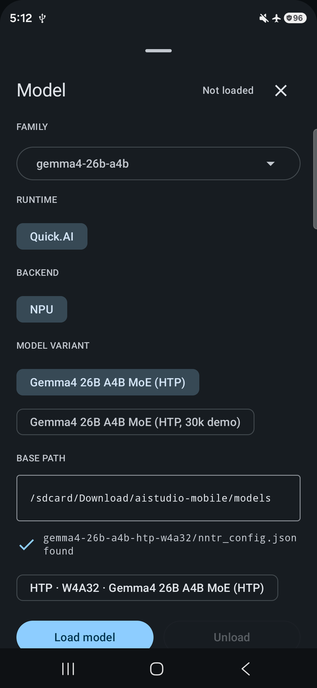
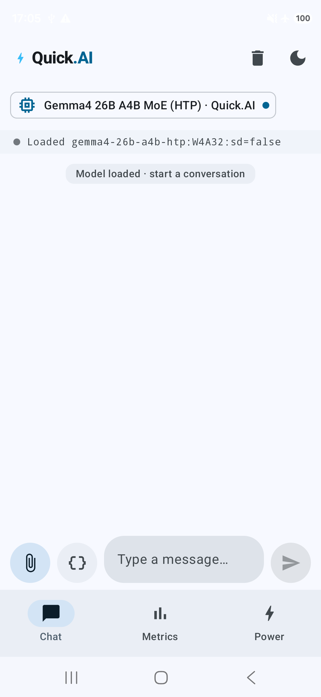
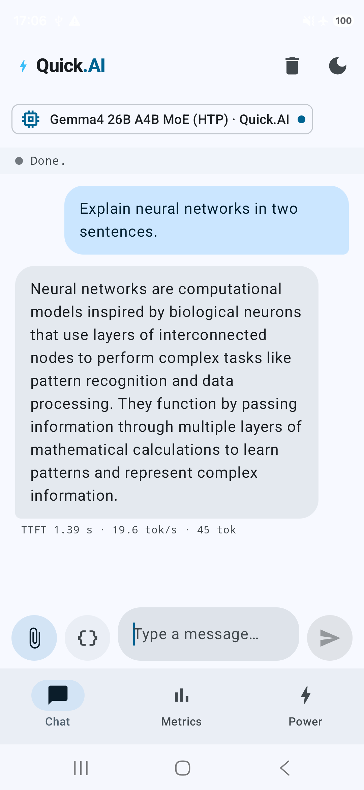
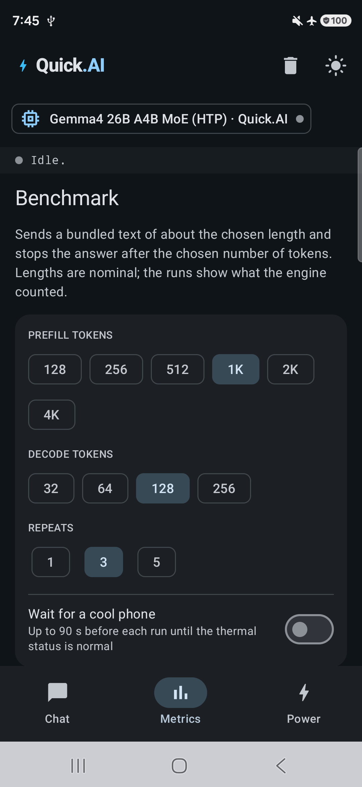

8. Build and install the Quick.AI app
The instructions follow the updated app at the source revision above. The model-selection and chat examples are real Quick.AI 2.0 captures from November 4, 2026 (Galaxy S26 Ultra SM-S948N / SM-S948U, Android 16, 4 KB pages). The Metrics image was refreshed on November 5 on SM-S948U and shows the benchmark setup. The installed APKs' source commits were not established; the captures illustrate the controls, while the pinned source defines their behaviour. Click an image to open its full-resolution capture.
Build and install the APK
On the host, reuse the same environment and source revision:
cd "$NNTR_ROOT/Applications/CausalLM"
set -o pipefail
./build_android.sh --htp --cache --app 2>&1 | tee "$NNTR_ROOT/gemma4-app-build.log"
This stages the native libraries, builds the library AAR and sample APK, and
runs verify_native_package.py. That verification checks required libraries,
the unmodified v81 DSP image and native library dependencies. It also rejects
unwanted QNN or vendor libcdsprpc.so libraries in the HTP package.
| Artifact | Location relative to NNTR_ROOT |
|---|---|
| AAR for application developers | Applications/CausalLM/Android/QuickDotAI/build/outputs/aar/QuickDotAI-debug.aar |
| Installable APK | Applications/CausalLM/Android/QuickDotAIAPP/build/outputs/apk/debug/QuickDotAIAPP-debug.apk |
| Native package verification report | The APK path followed by .native-manifest.json |
The APK installs on the phone. The AAR is a library for building other
apps and cannot be installed with adb install.
Install the completed APK from the host:
cd "$NNTR_ROOT"
adb install -r -t Applications/CausalLM/Android/QuickDotAIAPP/build/outputs/apk/debug/QuickDotAIAPP-debug.apk
adb shell appops set com.example.quickdotaiapp MANAGE_EXTERNAL_STORAGE allow
adb shell pm path com.example.quickdotaiapp
adb install should end with Success; pm path should return the installed
APK location. The permission command allows reading the pack under /sdcard.
You can instead grant All files access when the app opens the Android
permission screen, or through Settings → Apps → Special access → All files
access → Quick.AI (wording may vary).
As an alternative to separate build/install commands,
./build_android.sh --htp --cache --app --install builds the AAR/APK, installs
the APK and also deploys the CLI runtime. Neither approach copies model weights;
complete step 6 separately.
Load the model and send a message
Follow model selection → load confirmation → send a message. The model
selection capture uses the default base path. The load and chat
captures use a TL2 pack already available on the other phone under
/sdcard/Download/aistudio-mobile/models_1022. If you copied your pack as in
step 6, use /sdcard/Download/aistudio-mobile/models from the table below.
1. Select Gemma4 NPU and the model path
Tap the model chip below the top bar to open Model.
| Control | Select or check |
|---|---|
| FAMILY | gemma4-26b-a4b |
| RUNTIME | Quick.AI |
| BACKEND | NPU |
| MODEL VARIANT | Gemma4 26B A4B MoE (HTP) for this guide. This row appears when the selected family/runtime/backend offers multiple packs. |
| BASE PATH | /sdcard/Download/aistudio-mobile/models — the parent containing gemma4-26b-a4b-htp-w4a32 |
| Config status | gemma4-26b-a4b-htp-w4a32/nntr_config.json found |
| Model badge | HTP · W4A32 · Gemma4 26B A4B MoE (HTP) |


The found indicator only confirms a config file exists; the load can still
fail if weights or sidecars are missing. If Gemma4 NPU is absent from the model
list, check that the installed APK came from the --htp build.
2. Confirm the model has loaded
Tap Load model and wait. Once the Model sheet says Loaded, close
it with × at the top right. The chat status should read
Loaded gemma4-26b-a4b-htp ..., and the conversation area should say
Model loaded · start a conversation. Load time depends on the pack and
the phone's state.


Resolve Load failed before sending a question. Check BASE PATH and permissions first; if the config is found, check pack compatibility with the installed app and the presence of all required files.
3. Send a question and stop generation
Enter Explain neural networks in two sentences. in Type a message…
and tap the Send arrow on the right. The answer streams into the chat;
the status becomes Done. when it finishes. Use Android's Back action to
hide the keyboard if it covers the answer.


During generation, Stop replaces Send. Cancelling marks the turn stopped. The top-bar trash icon, Clear conversation, clears the visible chat. To release the model, use Unload in the model sheet.
At this revision the HTP app sends only the newest user message. Earlier chat bubbles are not conversation memory for this model. Keep initial prompts short: prompts beyond the configured context can be truncated without an error. The palette chat preset has 2,304 positions, a 2,048-token prompt limit and a 256-token answer budget; supplied TL2 packs can have different limits. Updating the app does not rewrite a previously copied pack's configuration. Increasing context can materially increase RAM use. These Gemma4 HTP packs are text-only; the app's image controls for other models do not make this path multimodal.
4. Check Metrics and unload
Open Metrics to run a speed benchmark with bundled text. Load the model, choose the lengths and repetitions below, then scroll down and tap Run. The initial choices are 1K / 128 / 3, with the thermal wait off.


| Control | Choices and behaviour |
|---|---|
| PREFILL TOKENS | 128, 256, 512, 1K, 2K or 4K nominal tokens of bundled text. |
| DECODE TOKENS | 32, 64, 128 or 256; the app stops the answer at the selected length. |
| REPEATS | 1, 3 or 5 runs. |
| Wait for a cool phone | Optional wait of up to 90 seconds before each run; off by default. |
| Run / Stop | Run requires a loaded, idle model and lengths that fit its pack. Stop ends the measurement. |
The benchmark uses its own prompt, sized at roughly four characters per token, and asks for a detailed retelling. The per-run table reports the actual token counts. Each repeat clears the visible chat before sending that prompt; save any conversation text you need first.
For native models the app reads max_seq_len - num_to_generate as the prompt
budget and num_to_generate as the answer budget, disabling choices above
them. The current palette preset therefore disables 4K prefill. An engine's
prefill limit can further shorten the actual prompt; inspect the reported
counts. Changing a choice does not change the pack's context configuration.
Results show the median TIME TO FIRST TOKEN (send to first token in the app), PREFILL throughput from engine timing, and DECODE throughput from first to last token using wall time. Each row gives prompt/answer counts and timings. Early answers, skipped runs and decode windows shorter than one second are marked; eligible runs contribute to the displayed medians. The first run after loading can include warm-up and is not automatically excluded.
With all-files access, the CSV is appended to
/sdcard/Download/QuickAI/power/bench.csv; otherwise the app uses its own
external-files directory. Check the displayed Saved to path. The former
last-chat metrics, peak-memory tile and raw-output history have been removed.
Per-answer chat statistics remain under the answers. The chat stream omits
turn markers such as <turn|>; use the native token trace for Gemma4 end-of-turn
ID 106.
5. Measure power
The Power tab measures whole-phone battery-gauge energy per output token. After loading a model, choose PROMPT, WINDOW TOKENS, REPEATS and BASELINE, then tap Measure and unplug the cable when prompted. The run waits for a cool phone, records idle power, generates the answer and cools down. Keep Measure while plugged off for power measurements; it is a debug option.
Power results include baseline-adjusted mJ/token, power and per-run records.
With all-files access, runs.csv and session JSON files go under
/sdcard/Download/QuickAI/power/. Metrics can run with USB attached and has no
power baseline or cool-down. Finish one measurement before starting the other.
When finished, or before running the CLI, open the top model chip and tap Unload. Use Load model to start again, or Reload model to replace an already loaded instance. The latest app runs native inference in a private worker and waits for it to exit before loading the next model. Load one NPU model at a time.